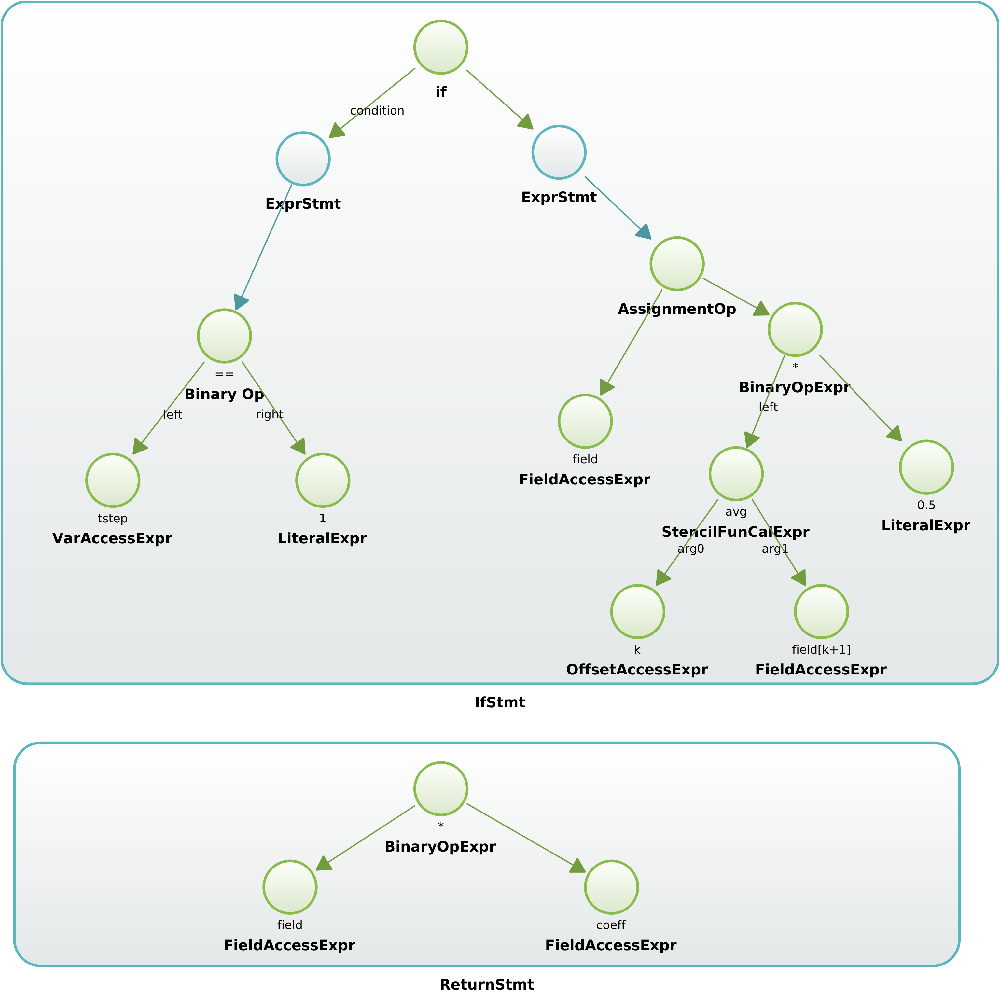

High-Level Intermediate Representation¶
Developing a single DSL that is able to support all numerical methods and computational patterns present in GFD models present a serious challenge due to the wide domain it needs to cover. In this project, we accept the reality that multiple scientific communities desire to develop their own DSL language, tailored for their model and needs. The High-level Intermediate Representation (HIR) allows to define multiple high level DSLs in a lightweight manner by reusing most of a complex toolchain, i.e. domain specific optimizers, safety checkers and code generators. In addition, a standardized HIR has another major advantage: It allows to easily interact with third-party developers and hardware manufacturers. For instance, the HIR of the COSMO atmospheric model, serialized to a mark-up Language like JSON, can be distributed to hardware vendors, which in turn have their proprietary, in-house compilers based on the HIR and can return plain C/C++ or CUDA code. This frees third-party developers from compiling the models and hopefully improves collaboration.
In this section we define a first draft of a specification of the HIR for structured grid weathe and climate computations.
- Program
the main program
It has
- A GlobalVariableMap.
- A sequence of ScopedProgram or ExternalKernel
- GlobalVariableMap
- a map of global variables to values used through the whole Program
- ExternalKernel
describes the call to a external kernels.
It has
- a sequence of input and output FieldDecl ‘s.
- ScopedProgram
Provides the control flow of a component of the full model.
It has
- a list<FieldDecl> used within the program
- a ControlFlowGraph
Example:
The following pseudo-code represents a ScopedProgram where conjugate_gradient_solver is the actual VerticalRegionComputationDecl that contains the grid points calculations that operates on fields f and g
for(iter: range) { field = f,g; res = conjugate_gradient_solver(f,g); if(res) break; }
- ControlFlowGraph
a sequence of statements of a control flow
It has
- a list<ControlFlowGraphStmt>
Example:
The following pseudo-code within a ScopedProgram
if(tstep==1) { call hdiff1(u, v) } else { call hdiff2(u,v) } u -= u_ref
is represented by the following ControlFlowGraph

- ControlFlowGraphStmt
A statement node of a ControlFlowGraph.
It is any of
- IfStmt
an if/then/else block statement
It has
- a condition of type ControlFlowGraphStmt || ComputationStmt
- a then statement of type ControlFlowGraphStmt || ComputationStmt
- an else of type ControlFlowGraphStmt || ComputationStmt
It can be used in
- BlockStmt
a block of any number of statements.
It has
- a list<ControlFlowGraphStmt || ComputationStmt >
It can be used in
- CallStmt
a statement call to another ScopedProgram, ExternalKernel or BoundaryConditionDecl
It has
- A list of argument FieldDecl ‘s
- One of ScopedProgram, ExternalKernel or BoundaryConditionDecl
It can be used in
Example:
Program radiation { Field pca1, pca2 call boundary_condition(zero_gradient, pca1) // -> This is a CallStmt to a BC call lw_solver(pca1, pca2) // -> This is a CallStmt to a ScopedProgram }
- BoundaryConditionDecl
a declaration of a boundary condition computation. It is an alias of a StencilFunctionDecl
It has
- Interval
- describes a vertical interval, determined by the lower and the upper bound.
- FieldDecl
storage in a N-D gridded space that is referenced by in the HIR by its name. All FieldDecl ‘s, with is_temporary==false, will be arguments of a call to a :term:`ScopedProgram or StencilFunctionDecl
It has
- string: name
- bool: is_temporary
It can be used in
- VarDecl
a variable that represents a N-dimensional scalar.
It has
It can be used in
Example:
Program model { storage f1, f2; var v1; // -> This is a gridded storage variable declaration var w[3] = {0.,1.,0.}; // -> This is a 3 dimensional scalar variable with initialization }
- VerticalRegionComputationDecl
declaration of the computations within a vertical region (determined by an Interval), that are executed with a certain vertical loop order
It has
- a LoopOrder
- an ComputationAST
- an Interval where the statements of the ComputationAST are computed
It can be used in
Example:
The backward substitution of the thomas algorithm
\[\begin{split}x_{n} &= d'_{n} \\ x_{i} &= d'_{i} -c'_{i}x_{i+1} \;\;\; ; i=n-1, n-2,...,1\end{split}\]can be coded as two VerticalRegionComputationDecl ‘s, with different ComputationAST, one for the update of the boundary level n and another one with a backward loop in the interval [n-1,1]
- LoopOrder
a loop order.
It can be any of
- enum: increment, enum: decrement
- ComputationAST
a sequence of statement nodes that describe the grid-point computations of a VerticalRegionComputationDecl or a StencilFunctionDecl
It has
- one or more than one ComputationStmt
It can be used in :class:: note
Example:
The following pseudocode
if(tstep == 1) { field[] = avg(k, field[i+1]) * 0.5; } return field*coeff;
will be represented as with the following AST
- ComputationStmt
a computation statement, i.e. a node of the ComputationAST.
It can be any of
- BlockStmt, ExprStmt, ReturnStmt (only if the ComputationAST belongs to a StencilFunctionDecl), StencilFunCallExpr, VarDecl, IfStmt
It can be used in
- ReturnStmt
a return statement
It has
- a Expr to return
- ExprStmt
- a statement that encloses a Expr
- Expr
- a expression, i.e. anything that contains a Identifier, LiteralExpr, OperatorExpr
- Identifier
It can be any of
- VarAccessExpr
an expression that represents an access to a variable
It has
- VarDecl
- LiteralExpr: access index of the var has more than 1 dimensions
Example:
globals { int tstep = 10; } Program model { var wght[2]; if(tstep == 11) // -> tstep is a VarAccessExpr (to global variable) wght[1] ++; // -> wght is a VarAccessExpr with an (index == 1) }
- FieldAccessExpr
an expression that represents an access to a field
- LiteralExpr
expression that represents a literal
It has
- string: value
- Type: type
- Type
- a type representation
- OperatorExpr
an expression that represents an operator
It can be any of
- BinaryOpExpr
a binary operator expression
- UnaryOpExpr
a unary operator expression
It has
- string: operator
- Expr: operand
- AssignmentOpExpr
an assignment operator expression
- TernaryOpExpr
an ternary operator expression
- StencilFunCallExpr
a stencil function call expression
It has
- StencilFunctionDecl
- list<StencilFunctionArg>: arguments
- Offset
Relative distance in a given Direction to a neighbor grid point.
It can be used in
- FieldDecl accesses
- As argument of StencilFunctionDecl ‘s.
Example:
i+1, [1,0,0]
- Direction
Identifies a dimension. A direction is also treated as an Offset with distance 0. It is mainly used to parameterize the direction of numerical operators in stencil functions.
It can be used in
- FieldDecl accesses
- as argument of StencilFunctionDecl ‘s.
Example:
avg(j, field)- StencilFunctionArg
a stencil function argument
It is any of
- StencilFunctionDecl
A parameterized function applied to a grid point that contains stencil operations.
It has
- list<Interval>: intervals for which there are different specializations of the computation.
- list<ComputationAST>: a computation AST for each Interval.
- list<StencilFunctionArg>: list of arguments that are common to the specializations of all Interval ‘s.
It can be used in